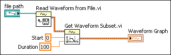
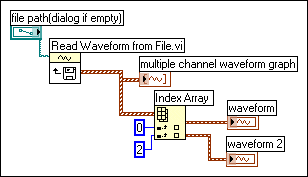

Use the Read Waveforms from File VI to read waveforms from a file. After you read a single waveform, you can retrieve a subset of the waveform at a specified time or index with the Get Waveform Subset VI, or you can extract waveform attributes with the Get Waveform Attribute function.
The following VI reads a waveform from a file, returns the first 100 elements of the waveform, and plots the subset of the waveform to a graph.

The Read Waveforms from File VI also reads multiple waveforms from a file. The VI returns an array of waveform data, which you can display in a multi-plot graph. If you want to access a single waveform from a file, you must index the array of waveform data, as shown in the following block diagram. The VI accesses a file that includes multiple waveforms. The Index Array function reads the first and third waveforms in the file and plots them on two separate waveform graphs.

You also can use the Storage/DataPlugin VIs or the Read From Measurement File Express VI to read waveforms from a file.